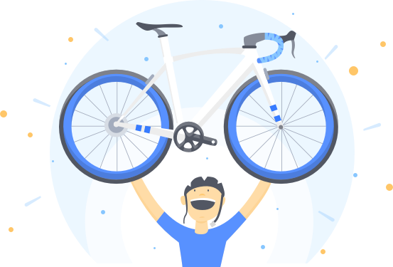
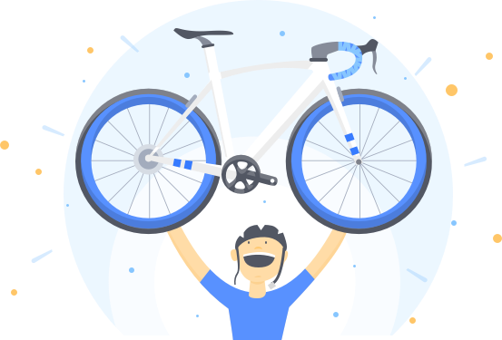

¡Enhorabuena! Tu bicicleta está en camino
Te hemos enviado un email con todos los detalles de tu compra
Puedes relajarte. Nosotros nos encargamos de todo:
-

Te la enviaremos de forma segura a tu dirección
¡Enhorabuena! Tu bicicleta está en camino
Te hemos enviado un email con todos los detalles de tu compra
Puedes relajarte. Nosotros nos encargamos de todo:
Te la enviaremos de forma segura a tu dirección
Y por si te quedara alguna duda...
Ya nos adelantamos nosotros para respondértela:
¿Cuándo recibiré mi pedido?
Si has comprado una bicicleta a un particular el plazo medio de entrega suele de ser de 6 a 10 días. Ten en cuenta que tenemos que recoger la bicicleta, llevársela al experto mecánico para que la revise, ponerla a punto y enviártela. Si has comprado una bicicleta a un vendedor profesional el plazo medio es de 2 a 5 días. Si es otro producto distinto a una bicicleta no suele tardar más de 5 días.
¿Qué pasa si la bicicleta no supera el proceso de certificación?
No te preocupes. Si la bicicleta no supera este control, el pedido se cancela y te devolvemos íntegramente tu dinero. En todo momento te informamos de las observaciones de mecánico.
¿Y si el pedido no me llega?
Tranquilo. La diferencia de comprar en Tuvalum a comprar en otros sitios de segunda mano es que somos nosotros quienes contratamos el transporte. Si no recibes lo que has comprado, recuperas tu dinero.
¿Puedo devolver un producto que he comprado?
Desde que recibes tu pedido tienes 48 horas para comprobar que está como se indicaba en el anuncio. Si es distinto o no coincide con la descripción del vendedor, te devolveremos el dinero. Ten en cuenta que en el caso de las bicicletas un mecánico ya se ha encargado de hacer esta comprobación por ti ;)